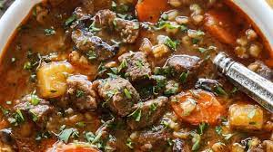

This beautiful bowl of beef and barley would be perfect for your next super-storm. When it comes to stick-to-your-ribs stews, it doesn't get any better than shank. There's so much gelatin-producing connective tissue, that it makes an especially satisfying sauce for your meat and grain.
Original recipeBy Chef John
Season beef all over with kosher salt and black pepper.
Heat vegetable oil in a large pot over high heat. Cook beef in hot oil until browned on both sides, about 10 minutes. Transfer beef to a plate.
Reduce heat to medium, and stir onion into the same pot with a pinch of salt. Cook and stir until onion is soft and translucent, 4 to 5 minutes. Stir garlic into onion; cook and stir until fragrant, about 1 minute.
Stir tomato paste into onion mixture; cook and stir until tomato paste is brick red, 2 to 3 minutes. Pour broth into onion mixture. Add celery, carrots, bay leaf, and rosemary. Return beef with any accumulated juices to pot; push beef down to cover with cooking liquid.
Bring broth mixture to a simmer, reduce heat to low, cover the pot, and cook until beef is fork-tender, 2 to 3 hours. Transfer beef to a bowl.
Pour barley into cooking liquid, bring to a simmer, and cook until barley is tender, about 45 minutes. Return beef to pot, cover the pot, and cook until heated through, about 10 minutes. Season with salt. Ladle stew into bowls and garnish with parsley and horseradish.